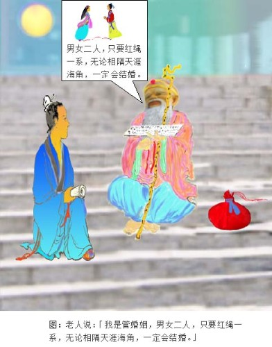

定婚店 太平广记 卷第一百五十九 江銘輝 五夢網
月下老人因李复言著述订婚店的故事，在中国广为流传。民间认为姻缘天注定，同时有一个掌管婚姻大事的月下老人，在中国土地上，月下老人祠到处都有，有的附在于其他庙宇中，至于杭州，因为是定婚店的所在地，所以月下老人祠特别出名，祠中并有一副对联，特别有意义：
愿天下有情人都成了眷属
是前生注定事莫错过姻缘
订婚店〈白话文〉李复言着 江铭辉译
龙兴寺门见面
杜陵有个名叫韦固的人，从小父母就过世。想要早一点娶妻，只是多次求亲，都没有成功。唐太宗贞观二年（公元628年），他去清河游历，中途住在宋城（今杭州市）南面的旅店。旅客中有一个人为他提亲，女方是以前的清河司马（注）潘昉的女儿，希望韦固第二天清早在店西的龙兴寺门见面。
（注：在唐朝司马是五品的官员，司马的职务就是协助当地的刺史办事，但是更多时候只是虚名而已，没有任何职权，几乎成为了朝廷贬官的一个代名词。）
月下老人
韦固求婚心切，第二天很早就赶去。到了庙前，月亮还在斜挂在天边。他看见一个老人靠着一个巾袋，坐在台阶上，借着月光看书。韦固偷偷向书瞄一下，书上的字都不认识，韦固便问老人：「老先生看的是什么书啊？我从小苦读，没有不认识的字，就是西方的梵文，我也能看懂，只有这本书上的字从来没见过，为什么？」老人笑着说：「这不是人间的书，你怎么会见过。」韦固又问：「那么是什么书阿？」老人说：「阴间的书。」韦固问：「阴间的人，怎么到这里来？」老人说：「不是我不应该来，是你来的太早，凡是阴间的官员都管阳间的事，怎么能不在人间行走呢？现在在路上行走的人，人和鬼各占一半，只是你无法辨别罢！」韦固问：「那么您管什么事啊？」老人说：「天下的婚姻大事。」韦固心中暗喜，说：「我从小失去父母，想早一点结婚，以便多生儿女。这十多年来，多方求亲，但都不能如愿。现在有人到这里来给我提潘司马的女儿，能够成功吗？」老人回答：「不成，你的妻子才刚刚三岁，等到十七岁才能进到你的家。」韦固问：「你口袋里装的什么东西？」老人回答：「红绳啊！」用来系夫妻两人的脚。他们一生下来，我就偷偷地将红绳绑在他们的脚上。不管这两家是仇敌，还是贫富相差悬殊，或者是在天涯海角当官，相隔千山万水，只要红绳一系，终生再也逃不掉了。你的脚已经和她的脚系在一起了，你再找别的人又有什么用呢？」韦固问：「我的妻子如今在哪里？家在何处？」老人回答：「这个店北面卖菜那个老妇人家的女儿。」韦固问：「能去看一看吗？」老人说：「陈老妇人经常抱她来，在这里卖菜，你跟着我走，我指给你看。」

杀人行凶
等到天亮了，相约的人没有来。老人卷起书，背着口袋要走，韦固跟着老人来到菜市场，看见一个瞎了一只眼看起来非常肮脏丑陋的老妇人，抱着一个三岁的女孩。老人指着女孩对韦固说：「那就是你的妻子。」韦固生气地说：「我杀了她不就行了？」老人说：「这女孩命中注定大富大贵，还要跟着你享福呢？那里会被杀呢？」说完老人突然不见了。韦固磨了一把刀子，交给仆人并吩咐：「你向来很会办事，如果为我杀了那个女孩，我给你一万钱。」仆人说：「好。」第二天，仆人将刀藏到袖子里来到喧哗热闹的市场，趁着人多的时候，刺了女孩一刀就跑，整个市场大乱，仆人因此可以逃脱。韦固问仆人说：「你刺中没？」仆人说：「本来想刺她的心脏，可是没刺到，刺到了眉间。」
新婚
韦固以后求婚，一直没有成功。又过了十四年，他靠父亲的蔽荫，到相州（今天的河南省安阳市）刺史（唐朝时，有时叫郡或州，郡叫太守，州称刺史。刺史就是太守。）王泰的底下参谋军务，担任辅佐司法的副官，专门负责收集证据、审讯囚犯。王泰因为他能干，将女儿嫁给他。年龄十六、七岁，容貌美丽，韦固十分满意，但是他发现妻子的眉间总是贴着一个小花片，即使在洗澡或休闲时，也没有暂时将它取下。
姻缘前生注定
如此过了一年多，他逼问妻子。妻子流着眼泪哭泣着说：「我是郡守大人的侄女，不是他的亲生女儿。我的父亲生前当宋城县令，死在任职上。当时我还在襁褓之中，母亲和哥哥也相继去逝。家里剩下城南的一个宅院，乳母陈氏带着我一齐居住，每天在离旅店不远的市场卖菜度日。陈氏可怜我年纪小，不忍心一刻与我分离。三岁的时候，将我抱着走到市场，被一个狂徒所刺。刀的疤痕还在，所以用小花片盖住。七、八年前，叔叔来到卢龙（唐朝时平州的治所 (今日的河北东北部)）任职，于是我跟在叔叔旁边，并以他女儿的名义嫁给你。」韦固问：「陈氏是不是瞎一只眼？」妻子说：「对，你怎么知道的？」韦固说：「刺你的人就是我韦固，真是奇事阿！」便将事情的一切全部告诉妻子。从此夫妻更加敬爱，后来生了个男孩叫「鲲」，当了雁门（今山西代县）太守。母亲被封为太原郡（即今山西太原县）太夫人。才知道阴德注定的事，是不会改变的。宋城县长听说了这件事，以那家旅店题名为：「订婚店」。（出自《续幽怪录》）
定婚店（原文）
杜陵韦固，少孤，思早娶妇，多歧，求婚不成。贞观二年，将游清河，旅次宋城南店。客有以前清河司马潘昉女为议者，来旦期于店西龙兴寺门。固以求之意切，旦往焉。斜月尚明，有老人倚巾囊，坐于阶上，向月检书。觇之，不识其字。固问曰：「老父所寻者何书？固少小苦学，字书无不识者。西国梵字，亦能读之。唯此书目所未觌，如何？」老人笑曰：「此非世间书，君因得见。」固曰：「然则何书也？」曰：「幽冥之书。」固曰：「幽冥之人，何以到此？」曰：「君行自平，非某不当来也。凡幽吏皆主人生之事，主（「主」原作「生」，据明抄本改）人可不行其中乎？今道途之行，人鬼各半，自不辨耳。」固曰：「然则君何主？」曰：「天下之婚牍耳。」固喜曰：「固少孤，尝愿早娶，以广后嗣。尔来十年，多方求
之，竞不遂意。今者人有期此，与议潘司马女，可以成乎？」曰：「未也，君之妇适三岁矣。年十七，当入君门。」因问囊中何物？曰：「赤绳子耳，以系夫妇之足，及其坐则潜用相系。虽仇敌之家，贵贱悬隔，天涯从宦，吴楚异乡，此绳一系，终不可逭。君之脚已系于彼矣，他求何益。」曰：「固妻安在？其家何为？」曰：「此店北卖菜家妪女耳。」固曰：「可见乎？」曰：「陈尝抱之来，卖菜于是。能随我行，当示君。」及明，所期不至，老人卷书揭囊而行。固逐之入菜（「菜」原本作「米」，据明抄本改）市。有眇妪，抱三岁女来，弊陋亦甚。老人指曰：「此君之妻也。」固怒曰：「杀之可乎？」老人曰：「此人命当食大禄，因子而食邑，庸可杀乎？」老人遂隐：「固磨一小刀，付其奴曰：「汝素干事，能为我杀彼女，赐汝万钱。」奴曰：「诺。」明日，袖刀入菜肆中，于众中刺之而走。一市纷扰，奔走获免。问奴曰：「所刺中否？」曰：「初刺其心，不幸才中眉间。」尔后求婚，终不遂。又十四年，以父荫参相州军（「军」原作「君」，据明抄本改）。刺史王泰俾摄司户掾（古代副官、佐吏的通称），专鞫狱，以为能，因妻以女。可年十六七，容色华丽。固称惬之极。然其眉间常贴一花钿，虽沐浴闲处，未尝暂去。岁余，固逼问之，妻潸然曰：「妾郡守之犹子也，非其女也。畴昔父曾宰宋城，终其官。时妾在襁褓，母兄次殁。唯一庄在宋城南，与乳母陈氏居，去店近，鬻蔬以给朝夕。陈氏怜小，不忍暂弃。三岁时，抱行市中，为狂贼所刺。刀痕尚在，故以花子覆之。七八年间，叔从事卢龙，遂得在左右，以为女嫁君耳。」固曰：「陈氏眇乎？」曰：「然，何以知之？」固曰：「所刺者固也。」乃曰奇也。因尽言之，相敬逾极。后生男鲲，为雁门太守，封太原群左夫人。知阴骘之定，不可变也。宋城宰闻之，题其店曰「定婚店」。（出《续幽怪录》）